津軽化粧地蔵巡り/稲垣村その2
化粧地蔵大国、稲垣村。 その神髄を求めてさらに村の中心部から村の東を流れる岩木川沿いの北部の集落へと化粧地蔵巡りは続く。 村の南東部に一本タモという大きなタモの木がある。一応、村で一番の観光地・・・かも。 一本タモは赤い柵で囲われており、タモの前には山ノ神が祀られている祠と弘法大師像が安置されている祠と化粧地蔵が置かれている地蔵堂がある。 弘法大師ももっちろんメイク決めまくってます。 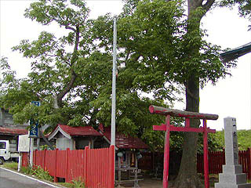 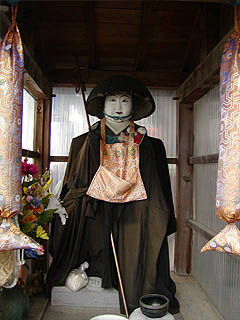 地蔵堂にはカラフルな衣装をまとった化粧地蔵が。六地蔵の胴体まで色付けされているのは少し若狭の化粧地蔵っぽい感じでした。 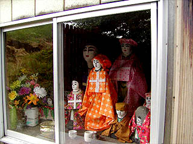 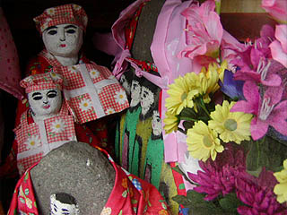 オレンジ色の衣装は先程、下野田で見たお地蔵さんと同じ布でつくられていた。同じ人がつくったわけではないのだろうが。 元増の地蔵堂。 中央に身代わり地蔵。周りに小さい地蔵を配した稲垣スタイルの典型のような配置。 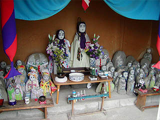 隅にはこんな素敵なお地蔵様（？）が。恐らく首が取れてしまったので首が乗っていた部分に顔を描いたものなのだろう。 宇宙人みたいでした。 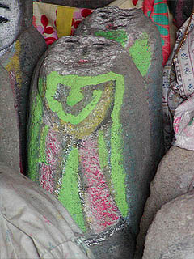 楽田の道沿いにあった化粧地蔵。 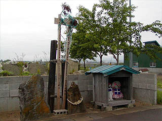 このように化粧地蔵があるところには石碑と木の柱がセットになっている場合が多い。 右の注連縄のある石碑には百万遍と彫られており、左の大きな石碑には二十三夜塔と彫られている。 特に百万遍の碑は良く見かけた。あと庚申塔も何カ所かあった。百万遍の碑は村境に建てられたという。 ということは化粧地蔵も村境にあり、道祖神のような役割も負っているのかも知れない。 木の柱には上の方に絵馬のようなものが付いていてそこには山の絵と月と太陽が描かれていた。これは岩木山なのだろうか、山頂が3つに分かれていた。 これは何を意味するのか判らないが岩木山信仰と関係あるものなのではなかろうか。 楽田の岩木川の土手にあるお寺の前にあった化粧地蔵。 右手にある観音と地蔵はお寺の所有仏なのだろうか、衣装を掛けられていませんでした。 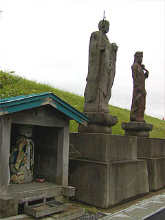 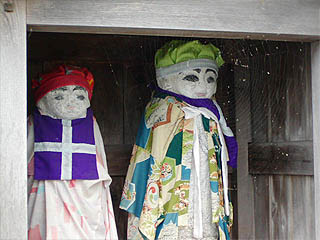 一方、祠の中のお地蔵さんにはキッチリ衣装＆メイクが施されていた。 お寺の裏手には共同墓地があり、そこにも化粧地蔵がいた。 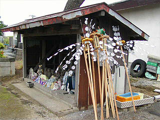 地蔵堂の横には野辺送りに使われる飾り物が立て掛けてあった。葬式があったのだろう。 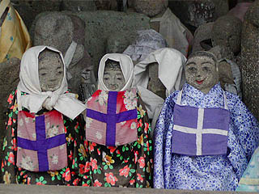 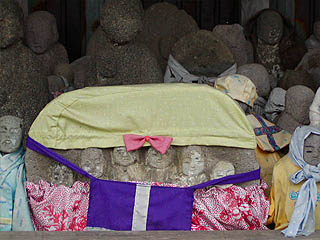 化粧、衣装を施された地蔵は一部だけだった。白塗りではなく目鼻口を描くだけのシンプルな化粧。 それだけに別の意味で迫力がありました・・・ 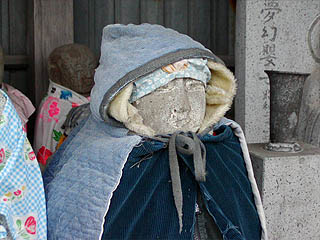 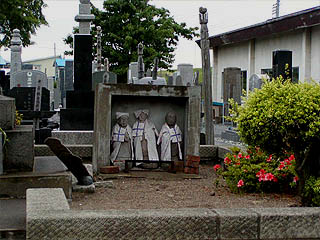 中には厚着のお地蔵さんも。津軽の冬は厳しいですからね。個人の墓の敷地内にいるお地蔵さんもいた。 さらに岩木川の土手沿いに北上する。土手沿いの神社に七福神がいた。やっぱり頬被り。 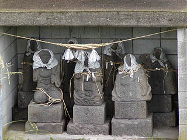 家調の土手下にぽつんとあった地蔵堂。 何となく淋しい場所だが花が手向けられており衣装も新しい。比較的丁寧にまつられている様だった。 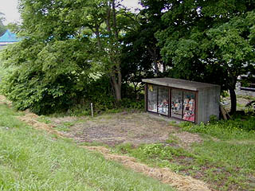 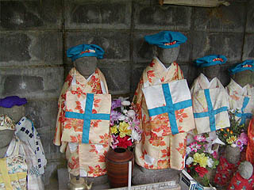 繁萢にある赤倉神社の横にある地蔵。 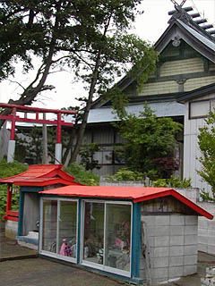 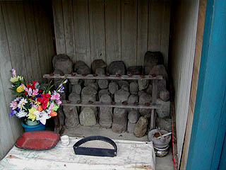 ここの地蔵堂は2つに分かれている。右の方には化粧地蔵がまつられていたが、左の祠には原型をとどめない元地蔵であった石の塊がまとめて安置してあった。勿論、ここにも花が手向けられている。カタチはなくとも信仰の対象である事には変わりない。 繁田の化粧地蔵。公園の入口付近にあった。 ブロック造で正面に金網が張ってあったのでゴミの集積所と間違えそうだが、中にはお地蔵さんが詰まってます。 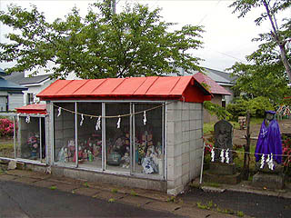 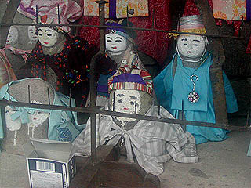 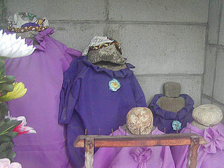 ここも左に小さな小部屋が設けられており、カタチの崩れかけた石像がまとめられていた。でも紫の衣と帽子が掛けられていました。 船越の墓地に行く途中の地蔵堂。奥に見える青い屋根の建物も地蔵堂である。 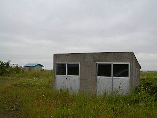 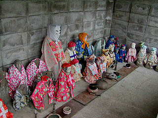 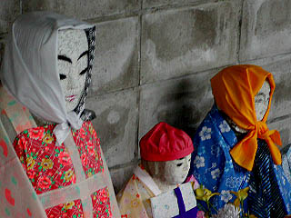 中には外側の素っ気無さとは裏腹に濃密な空気が漂う。流木を転用したロウソク立てがカッコ良いぞ。 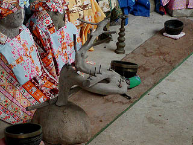 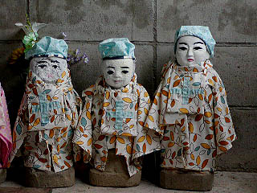 奥の青い屋根の地蔵堂には4体のお地蔵さんがひっそりといた。 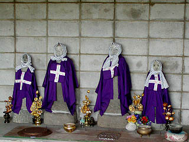 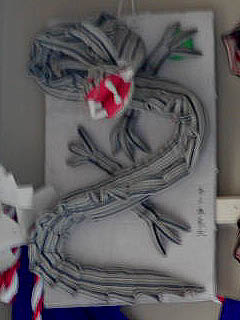 関係ないが近くの神社にあった奉納物。帯のような長い布から作られたトカゲ？イモリ？何を祈念しているのか知らないがびっくりしました。 下繁田のお寺の入口に建つ建物。 扉が開いてなかったら化粧地蔵がいるとは判らなかっただろう。 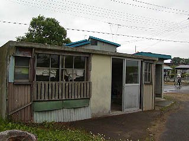 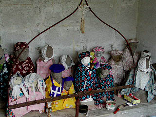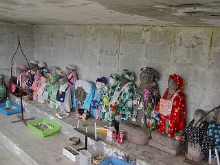 ここにもたくさんのお地蔵さんがいた。 村を回ってみてずーっと気になっていたのだが、どこも地蔵堂というにはあまりにも味気のない建物である。 しかしそれもまた津軽の地蔵信仰の特徴ともいえるのではなかろうか。 これは共同体とその住民が自発的に作り上げて来た真摯な信仰のひとつの姿なのだ。 この辺りが稲垣村の最北端の場所である。そろそろ稲垣村を出て周辺の化粧地蔵を見てみよう。 稲垣村以外の地域ヘ行きましょう
津軽化粧地蔵巡り稲垣村その１ 稲垣村以外の地域
珍寺大道場 HOME